JEPA đầu tiên train ổn định, end-to-end từ pixel thô chỉ với 2 loss và 1 hyperparameter — 15M params, 1 GPU, plan nhanh hơn foundation-model WM tới 48×.
JEPA học world model trong latent space rất hay, nhưng rất dễ collapse (encoder map mọi ảnh về cùng 1 vector để "gian lận" loss). Các cách chống collapse hiện tại đều chắp vá: EMA + stop-gradient, loss 7 số hạng, hoặc đóng băng encoder pretrained.
Thay mọi heuristic bằng một regularizer có bảo đảm lý thuyết: ép phân phối embedding về isotropic Gaussian (SIGReg). Gaussian ⇒ variance mọi chiều > 0 ⇒ không thể collapse.
Xây agent học được nhiều kỹ năng, nhiều môi trường bằng một cách học duy nhất, và học thẳng từ camera — không cần người thiết kế sẵn "trạng thái" cho từng bài toán. Camera rẻ và có ở khắp nơi nên hướng này mới scale được.
Model học dự đoán hệ quả của hành động. Có nó rồi thì agent thử hàng trăm phương án trong tưởng tượng rồi mới chọn cái tốt nhất để làm thật.
Đặc biệt quý ở offline setting: chỉ có dataset cố định, không được tương tác thêm với môi trường.
JEPA dự đoán trong latent thay vì pixel — hay về ý tưởng nhưng cực dễ collapse. Mọi cách chống collapse hiện có đều chắp vá và phải trả giá: EMA+stop-grad (không có objective rõ ràng), encoder đóng băng (mất end-to-end), hoặc loss 7 số hạng (bất ổn).
Làm sao train được một JEPA world model, học end-to-end trực tiếp từ pixel thô, một cách ổn định, mà không cần bất kỳ heuristic chống collapse nào, và có bảo đảm lý thuyết rằng nó không collapse?
| Thành phần | Mô tả |
|---|---|
| o1:T | Các frame pixel thô, RGB 224×224. Không qua bước trích đặc trưng thủ công nào. |
| a1:T | Hành động liên tục tương ứng từng bước. |
Quỹ đạo không cần tối ưu — pseudo-expert hay exploratory đều được, miễn là phủ đủ dynamics. Đây chính là chỗ LeWM sẽ yếu đi khi data quá nghèo (ca Two-Room).
Mỗi mẫu train chỉ là một sub-trajectory 4 frame cắt ra từ quỹ đạo dài ~200 bước, không phải cả quỹ đạo.
| Thành phần | Mô tả |
|---|---|
| o1 | Ảnh tình trạng hiện tại của môi trường. |
| og | Một tấm ảnh mô tả trạng thái mong muốn. |
Người dùng không viết lệnh, không đặt reward — chỉ đưa ảnh của cái đích. Cách ra lệnh này gọi là goal-conditioned.
5 hành động liên tiếp được gom thành 1 "action block", nên mỗi bước model thấy = 5 bước thật của môi trường.
Vì thế T = 4 frame ⟺ 4 block × 5 hành động.
Tổng ~15M tham số — train vài giờ trên 1 GPU. Đáng để so sánh: DINO-WM dùng DINOv2, pretrain trên ~124 triệu ảnh.
Một chuỗi hành động được cho là đưa môi trường từ o1 tới gần og nhất.
Không có policy network nào được train. Hành động được tìm bằng cách tối ưu trực tiếp tại thời điểm chạy — mỗi lần cần hành động là một lần giải bài toán tối ưu.
Paper có train một decoder latent → ảnh, nhưng nó được train sau khi world model đã xong, không đóng góp gradient nào, và chỉ để con người nhìn xem model tưởng tượng ra gì. Nó là công cụ chẩn đoán.
Mọi frame trong batch đi qua encoder thành vector: zt = encθ(ot). Đầu ra là tensor (B, T, D) với D = 192.
Predictor nhận zt cùng hành động at và đoán vector frame kế tiếp. Nó chạy tự hồi quy trên lịch sử N frame với causal mask — khi đoán bước t+1 chỉ được nhìn các bước ≤ t, không nhìn trộm tương lai.
So vector dự đoán với vector thật: 𝓛pred = ‖ẑt+1 − zt+1‖²₂. Ở đây zt+1 là embedding thật do chính encoder tạo ra từ frame thật — cách train này gọi là teacher forcing.
Lấy toàn bộ embedding trong batch, kiểm tra phân phối của chúng có giống 𝒩(0, I) không, và phạt theo mức độ lệch. Cơ chế chi tiết: xem slide "SIGReg hoạt động thế nào".
𝓛LeWM = 𝓛pred + λ · SIGReg(Z), với λ = 0.1. Gradient chảy ngược qua toàn bộ model, cập nhật encoder và predictor cùng lúc.
Encode ảnh hiện tại và ảnh đích thành hai vector: ẑ1 = encθ(o1) và zg = encθ(og).
Sinh ngẫu nhiên một chuỗi hành động ứng viên độ dài H.
Từ ẑ1 và chuỗi hành động, predictor lần lượt tính ẑ2, …, ẑH. Toàn bộ diễn ra trong latent space, không dựng lại ảnh nào — đây là nguồn gốc của tốc độ.
C(ẑH) = ‖ẑH − zg‖²₂. Chỉ so trạng thái cuối với đích, không cần reward từng bước ⇒ reward-free.
Solver cập nhật chuỗi hành động cho cost nhỏ đi rồi quay lại bước 3. Trọng số world model bị đóng băng — thứ duy nhất được tối ưu là chuỗi hành động.
Chạy kế hoạch ra môi trường thật, quan sát ảnh mới, rồi lập kế hoạch lại từ đầu (ý của MPC). Chi tiết solver: xem slide "Latent planning".
Model học dự đoán hệ quả của hành động trong môi trường. Có WM rồi thì agent có thể "tưởng tượng" (plan trong imagination space) mà không cần thử thật.
Rất quý trong offline setting: chỉ có dataset cố định, không được tương tác môi trường.
IRIS, DIAMOND, DreamerV4, Genie… sinh ra frame tương lai. Mạnh nhưng phải model mọi chi tiết ảnh (mây, texture, noise) — đắt và phần lớn chi tiết vô ích cho việc điều khiển.
Nhiều method cần cả reward trong dataset.
Thay vì đoán pixel, encode ảnh thành vector nhỏ z rồi đoán z tương lai. Chỉ giữ thứ cần cho dự đoán, bỏ chi tiết vô nghĩa.
Reward-free, reconstruction-free, task-agnostic.
Loss "đoán z tiếp theo" có một nghiệm gian lận hoàn hảo: encoder cho mọi ảnh ra cùng một vector hằng số → predictor đoán trúng 100%, loss = 0, nhưng representation vô dụng.
Chống collapse là bài toán trung tâm của cả dòng JEPA.
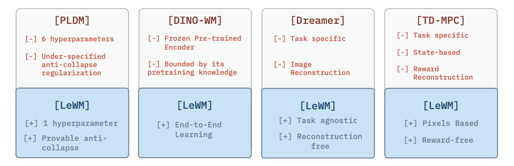
✔ Học encoder + predictor từ pixel
✘ 6 hyperparameters
✘ Anti-collapse under-specified
✔ Không collapse (encoder đóng băng)
✘ Không end-to-end
✘ Bị giới hạn bởi kiến thức pretrain
✘ Task-specific
✘ Cần reward hoặc state đặc quyền
✘ Phải reconstruct ảnh / reward
✔ End-to-end, pixel-based
✔ Task-agnostic, reward-free, reconstruction-free
✔ 1 hyperparameter + anti-collapse có chứng minh
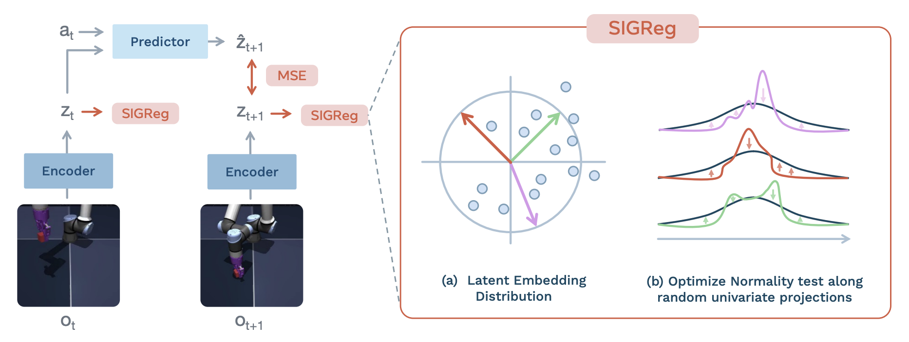
Cả hai được optimize đồng thời, end-to-end. Gradient chảy qua mọi nhánh của loss.
Dataset: chỉ trajectory (o1:T, a1:T) offline, không cần optimal — miễn là phủ đủ dynamics của môi trường.
Ép phân phối của embedding khớp isotropic Gaussian 𝒩(0, I).
Khó khăn: test normality trực tiếp trong d chiều cao là không khả thi — hầu hết normality test kinh điển chỉ dành cho dữ liệu 1 chiều và không scale theo số chiều.
Lấy M hướng ngẫu nhiên u(m) đơn vị trên hypersphere, chiếu embedding xuống:
Default M = 1024. Ablation cho thấy M gần như không ảnh hưởng kết quả.
Trên từng chiều chiếu, tối thiểu hoá Epps–Pulley statistic — so empirical characteristic function (ECF) của dữ liệu với ECF của 𝒩(0,1):
Vì target là isotropic Gaussian, mọi marginal 1-D đều đúng bằng 𝒩(0,1) — nên chỉ cần một target duy nhất cho mọi hướng chiếu.
Định lý Cramér–Wold: nếu tất cả marginal 1-D khớp nhau thì phân phối joint khớp nhau.
Đây là chỗ khác biệt căn bản với VICReg: VICReg chỉ chỉnh variance + covariance (moment bậc 2) — under-specified, còn nhiều phân phối xấu vẫn thoả. SIGReg khoá toàn bộ phân phối.
def LeWorldModel(obs, actions, lambd=0.1): # obs: (B, T, C, H, W) pixel thô # actions: (B, T, A) emb = encoder(obs) # (B,T,D) next_emb = predictor(emb, actions) # (B,T,D) # next-embedding prediction loss pred_loss = F.mse_loss(emb[:, 1:] - next_emb[:, :-1]) # step-wise SIGReg (anti-collapse) sigreg_loss = mean(SIGReg(emb.transpose(0, 1))) return pred_loss + lambd * sigreg_loss
Frame-skip gom 5 action liên tiếp thành 1 "action block" ⇒ dự đoán xa hơn với cùng chi phí compute.
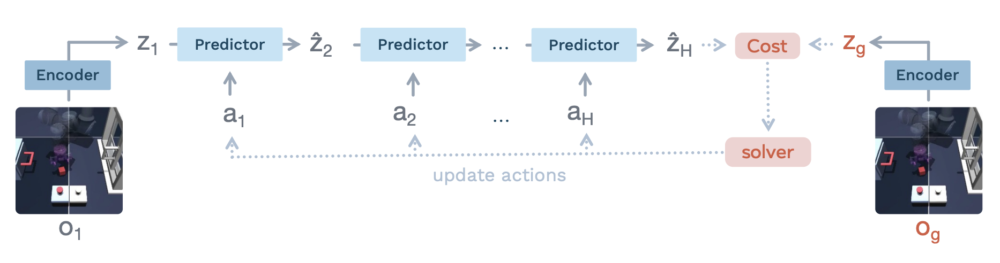
Chỉ so state cuối với goal — không cần reward, không cần train policy.
Nhược điểm của CEM, do chính paper nêu: trong bài toán không lồi thì không có bảo đảm hội tụ về nghiệm tối ưu toàn cục, và nó chịu lời nguyền số chiều — không gian hành động càng lớn thì CEM càng đuối.
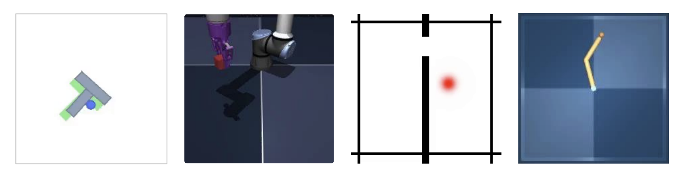
Đẩy khối chữ T về đúng cấu hình đích. Benchmark robotics phổ biến. 20k expert episode, dài ~196 step.
Tay robot gắp cube và đặt vào vị trí đích. Visual phức tạp nhất. 10k episode × 200 step.
Agent (điểm đỏ) đi từ phòng này sang phòng kia qua 1 cửa. Đơn giản nhất. 10k episode ~92 step. Data sinh bằng heuristic policy có nhiễu (đi tới cửa trước, sang phòng rồi mới tới đích) ⇒ dataset kém đa dạng, và đây chính là lý do LeWM thua ở env này.
Tay 2 khớp trên mặt phẳng 2D. Định nghĩa thành công khắt khe hơn ta tưởng: các khớp phải khớp chính xác cấu hình đích, không chỉ là chạm tới vị trí. Data từ policy SAC. 10k episode × 200 step.
DINO-WM bị bỏ proprioception cho công bằng (bản +prop báo cáo riêng).
Cần nói rõ khi trình bày: GCBC / GCIQL / GCIVL đều mã hoá observation và goal bằng DINOv2 patch embeddings — tức chúng cũng hưởng lợi từ pretrain khổng lồ, trong khi LeWM học encoder từ con số không.
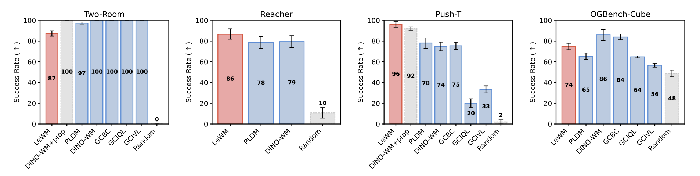
| Env | LeWM | PLDM | DINO-WM | Nhận xét |
|---|---|---|---|---|
| Push-T | 96 | 78 | 74 (+prop 92) | Thắng đậm, hơn cả DINO-WM+prop |
| Reacher | 86 | 78 | 79 | Thắng |
| OGB-Cube | 74 | 65 | 86 | Thắng PLDM, thua DINO-WM |
| Two-Room | 87 | 97 | 100 | Thua — xem giải thích → |
Push-T: LeWM chỉ dùng pixel mà vượt DINO-WM có thêm proprioception ⇒ encoder tự học ra được đại lượng task-relevant mà không cần cho sẵn.
Two-Room (đơn giản nhất) LeWM lại kém. Giải thích của tác giả: dataset ít đa dạng, intrinsic dimensionality thấp, nên bắt embedding khớp Gaussian trong không gian chiều cao là ép quá đáng ⇒ latent kém structure. Đây là limitation của SIGReg.
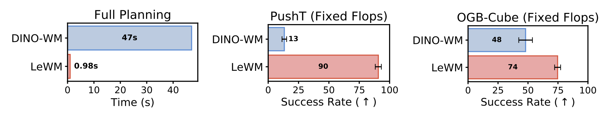
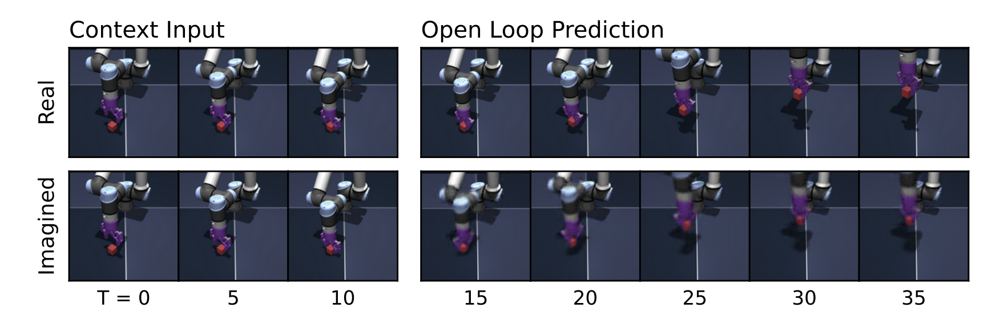
Latent giữ được cấu trúc scene toàn cục và chuyển động của cube. Nhưng chi tiết mịn như góc quay end-effector bị mất dần ở horizon dài — khớp với probing: đại lượng rotational khó encode nhất (Tab. 4).
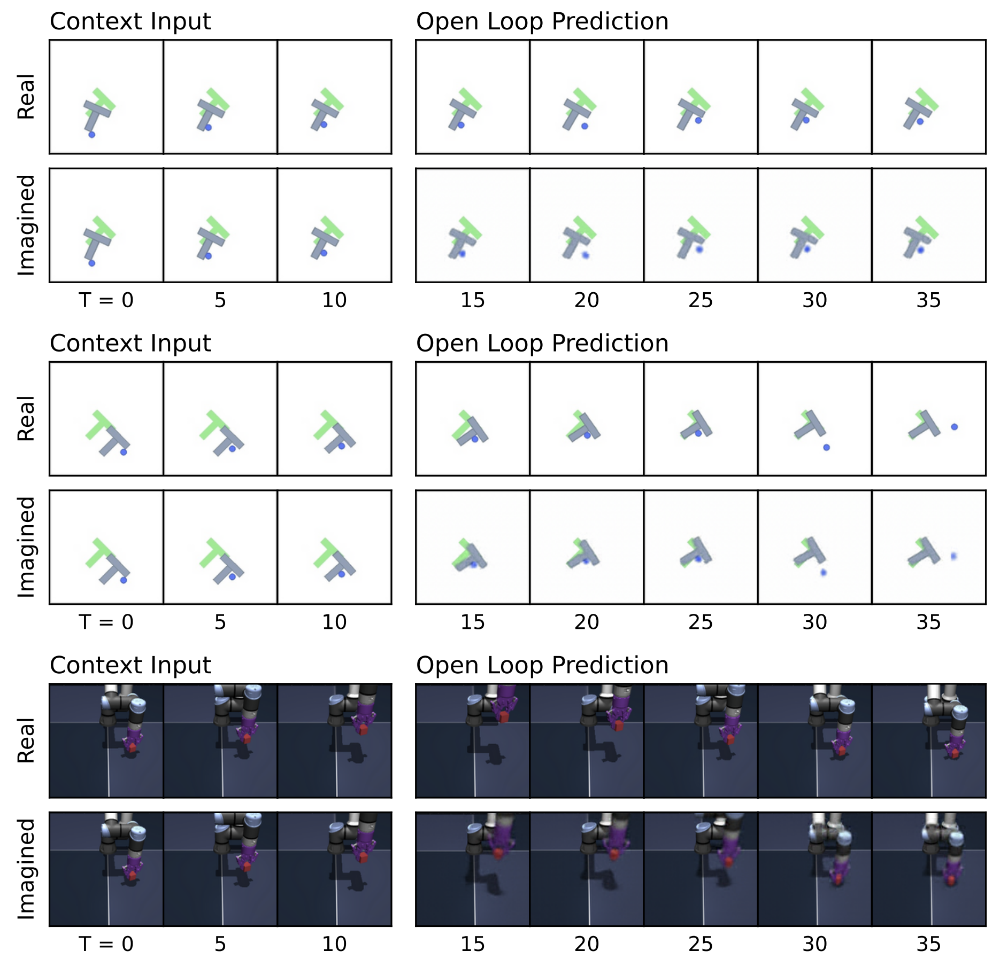
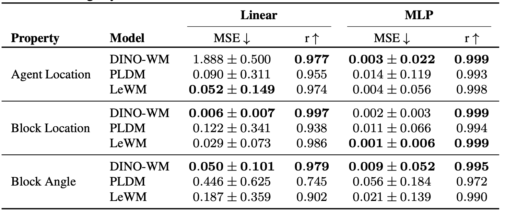
Đóng băng encoder, train một model nhỏ (linear hoặc MLP) đoán đại lượng vật lý thật từ vector latent. Đoán được ⇒ thông tin đó có nằm trong latent.
Linear probe: thông tin có truy cập tuyến tính được không.
MLP probe: thông tin có mặt nhưng có thể bị entangled.
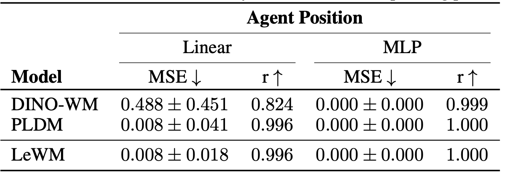
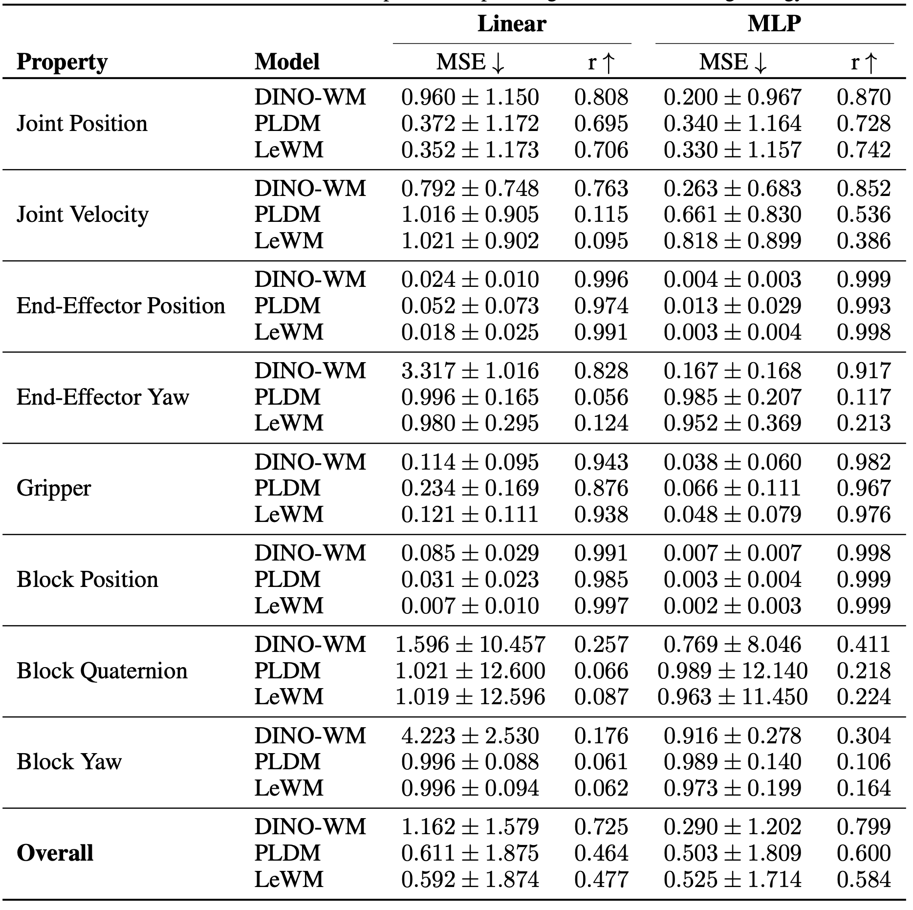
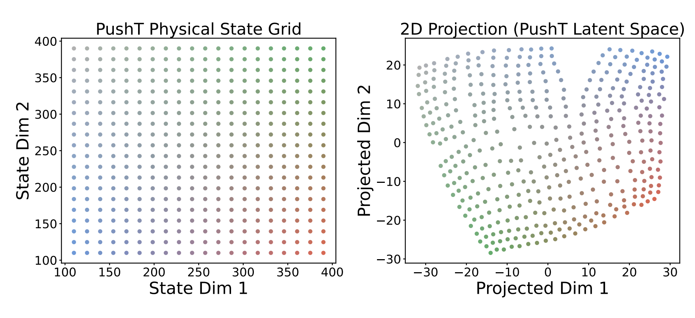
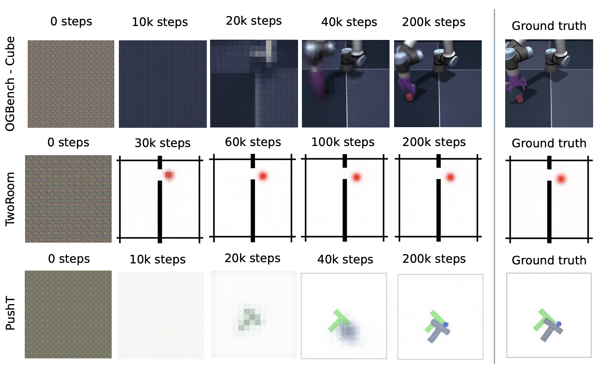
Càng train, decoder dựng lại ảnh càng đúng — dù reconstruction chưa bao giờ là mục tiêu. Chứng tỏ latent 192 chiều giữ đủ physical state.
Giai đoạn đầu, ảnh decode ra tương ứng slow features (thứ biến đổi chậm nhất trong scene) — hiện tượng đã được báo cáo ở JEPA trước đó.
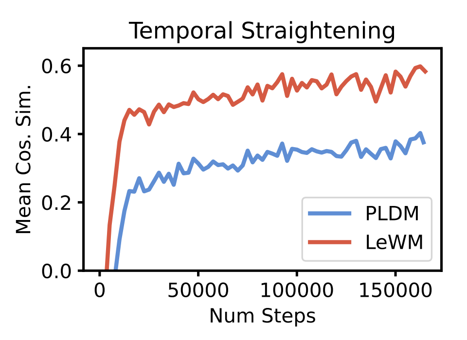
Đo cosine similarity giữa các velocity vector liên tiếp vt = zt+1 − zt. Gần 1 ⇒ quỹ đạo latent gần đường thẳng. Ý tưởng gốc từ neuroscience (Hénaff et al.): não biểu diễn động lực phức tạp thành đường gần thẳng.
Bất ngờ: LeWM thẳng hơn PLDM, mặc dù PLDM có hẳn một term (𝓛time-sim) để ép temporal smoothness, còn LeWM không có gì cả.
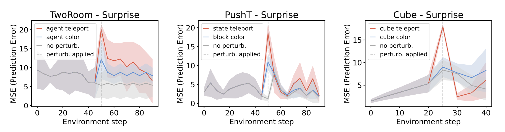
Đo surprise = sai số giữa dự đoán và thực tế. Model "hiểu vật lý" thì phải ngạc nhiên nhiều hơn khi thấy chuyện trái quy luật vật lý.
LeWM nhảy surprise rất mạnh khi teleport (paired t-test, p < 0.01 ở cả 3 env), nhưng phản ứng yếu và không significant với đổi màu.
⇒ Model nhạy với vi phạm vật lý hơn vi phạm thị giác — đúng như ta muốn ở một world model.
Điểm mạnh nằm ở đâu, nói cho chuẩn: không phải ở chỗ "biết ngạc nhiên" — cả 3 method đều biết, ở env đơn giản. Mà ở chỗ ngạc nhiên có chọn lọc: mạnh với cái sai về bản chất, nhẹ với cái chỉ khác bề ngoài.
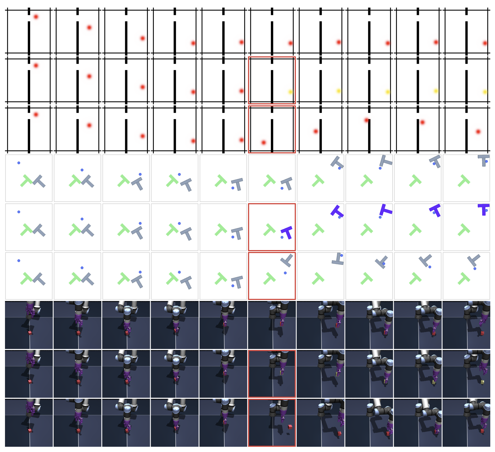
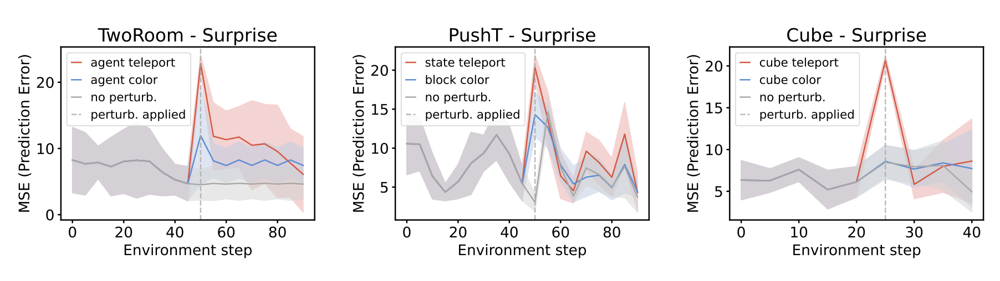
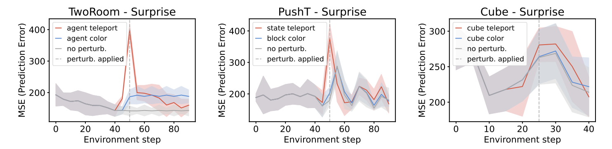
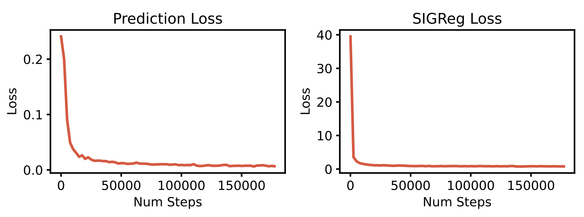
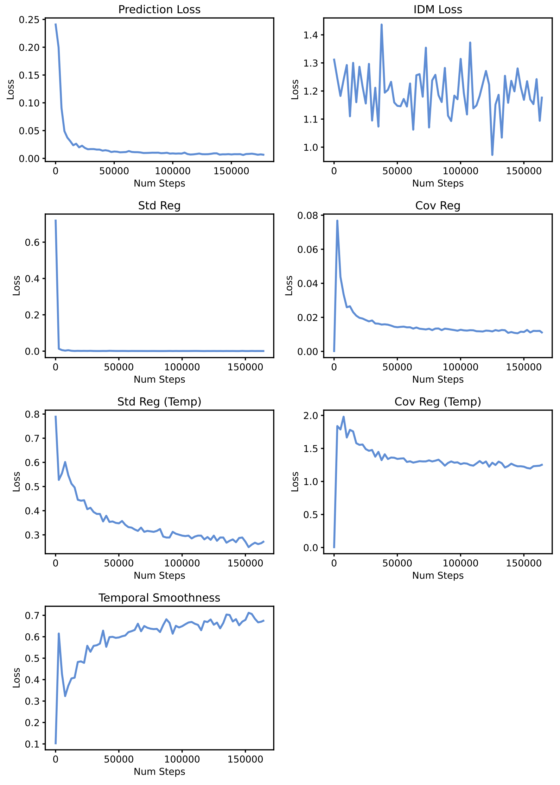
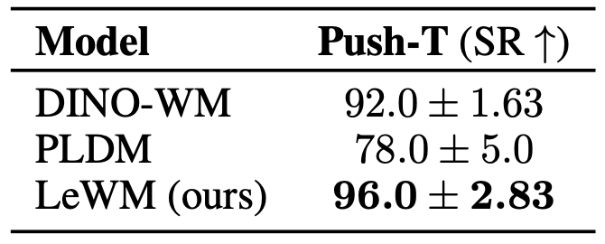
Không chỉ là "loss đẹp": (1) loss curve monotonic, (2) variance thấp giữa các seed, (3) robust với architecture & hyperparameter, (4) tune được bằng bisection O(log n).
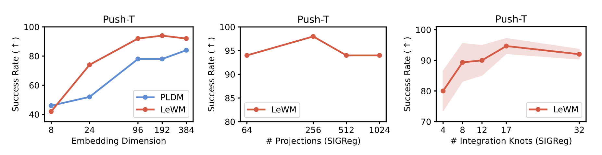
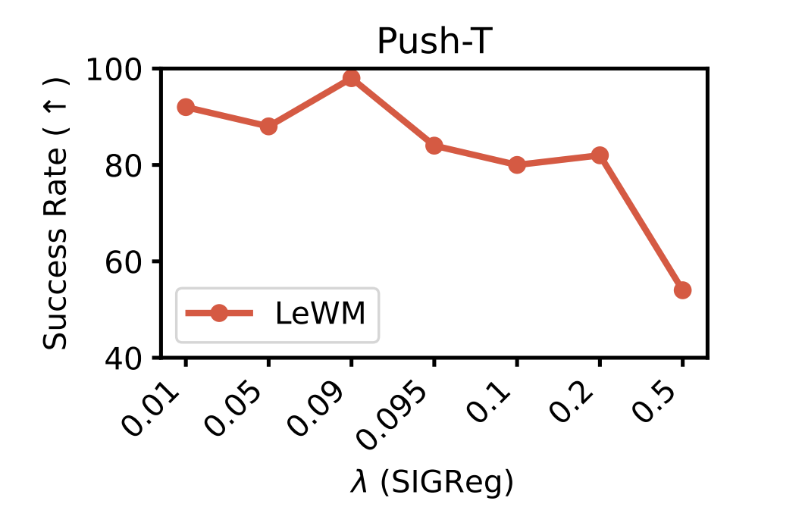
tiny 80.7 · small 96.0 · base 86.7
ViT-S là điểm cân bằng tốt nhất giữa capacity và độ ổn định optimization.
0.0 → 78 · 0.1 → 96 · 0.2 → 85 · 0.5 → 67
Dropout nhẹ giúp generalize; nhiều quá thì phá dynamics.
Không decoder 96.0 · có decoder 86.0
Reconstruction làm tệ hơn — nó bắt model nhớ chi tiết thị giác vô ích cho control. Đúng tinh thần JEPA.
ViT 96.0 · ResNet-18 94.0
Gần như agnostic với backbone, ViT nhích hơn chút.
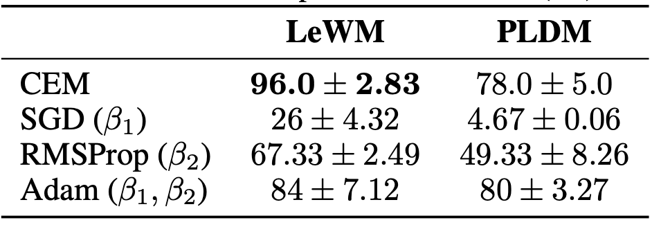
Hai tham số bên trong SIGReg (M projections, integration knots) gần như vô hại ⇒ đúng là λ là hyperparameter duy nhất. Và λ có plateau rộng ⇒ dễ tune. Đây chính là lời hứa lớn nhất của paper, và ablation là phần chứng minh lời hứa đó.
3 chi tiết dễ bị bỏ qua nhưng ảnh hưởng lớn: projection + BatchNorm sau [CLS] (vì LayerNorm phá SIGReg) · dropout 0.1 ở predictor · AdaLN init zero.
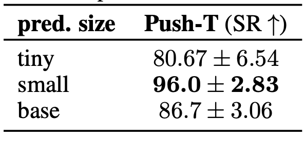
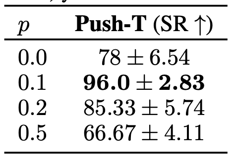
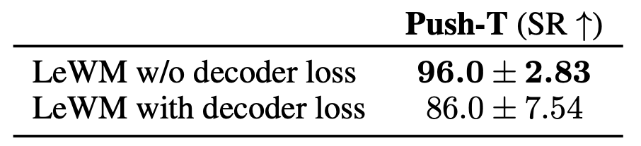
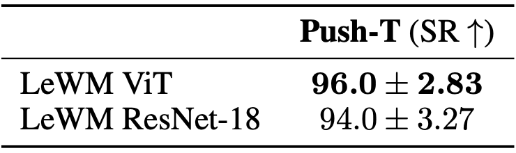
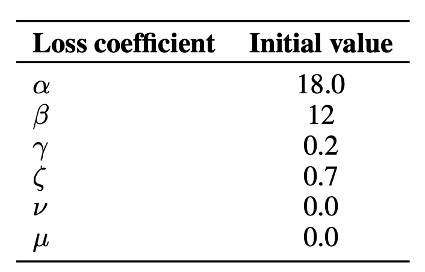
Đây là lời buộc tội mạnh nhất dành cho PLDM: phải chạy grid search 256 config chỉ trên Push-T mới ra bộ hệ số này, mà bản gốc PLDM còn tune riêng cho từng environment + dataset ⇒ khó transfer. Đáng chú ý: ν = μ = 0, tức 2 term (time-cov, IDM) bị tắt hẳn.
VẤN ĐỀ JEPA world model rất dễ collapse │ CÁCH CŨ ├─ EMA + stop-grad ....... không có objective rõ ràng ├─ frozen encoder ........ mất end-to-end, bị chặn bởi pretrain └─ VICReg + 6 hệ số ...... bất ổn, grid search O(n⁶) │ LeWM └─ L = L_pred + λ · SIGReg(Z) ← 2 term, 1 hyperparameter │ │ │ └─ random projection → Epps–Pulley 1-D │ ⟹ Cramér–Wold ⟹ P_Z → N(0, I) ⟹ không thể collapse │ KIẾN TRÚC ├─ encoder: ViT-T + proj(MLP+BatchNorm) trên [CLS] (~5M) └─ predictor: ViT-S, action qua AdaLN(init 0), causal (~10M) │ DÙNG ĐỂ LÀM GÌ └─ latent planning: CEM (300 samples, 30 iters, top-30) + MPC, H=5 cost = ‖ẑ_H − z_g‖² ← reward-free, không train policy │ KẾT QUẢ ├─ Push-T 96 · Reacher 86 · OGB-Cube 74 · Two-Room 87 ├─ plan 0.98s vs DINO-WM 47s (~48×); cùng FLOPs: 90 vs 13 └─ seed variance thấp, loss curve monotonic │ PHÂN TÍCH ├─ probing: giữ được position tốt; yaw/quaternion thì không ├─ decode được scene dù không có reconstruction loss ├─ temporal straightening emergent (thẳng hơn cả PLDM) └─ VoE: ngạc nhiên mạnh khi teleport (p<0.01), yếu khi đổi màu │ GIỚI HẠN horizon ngắn · cần action label · cần data đủ đa dạng SIGReg yếu ở env quá đơn giản (Two-Room)